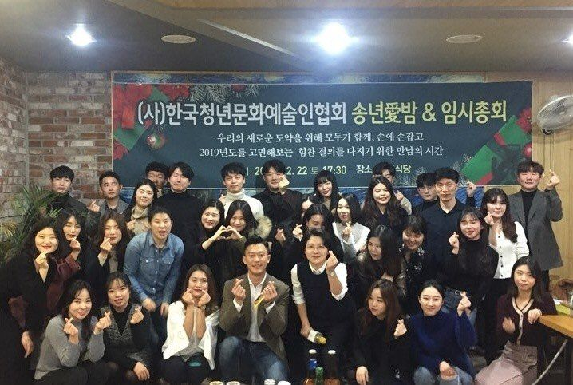
총 50건 · 카드를 누르면 기사 원문으로 이동합니다
조각 예술 사제간의 전통과 혁신을 아우르다
대담미술관 청출어람 프로젝트 ‘세계일화’
기사 원문 보기 ↗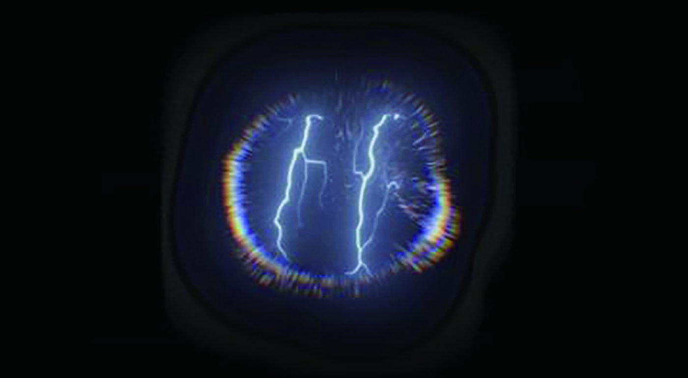
기후위기 시대 자연과 인간 ‘함께 숨쉬기 프로젝트’ 해법찾기
기후위기 시대, ‘함께 숨쉬기 프로젝트’로 공존의 해법 찾기
기사 원문 보기 ↗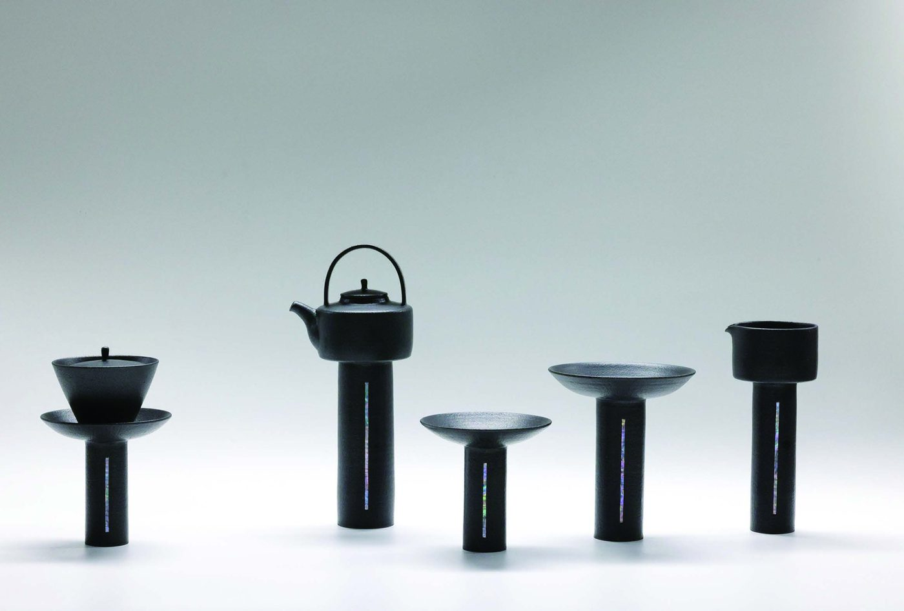
'열린 문화예술 공간' GIST 오룡아트홀서 열리는 여섯 번째 초대전…'공존'
GIST 오룡아트홀 초대전 ‘함께 숨쉬기 프로젝트 — 더 나은 공존’
기사 원문 보기 ↗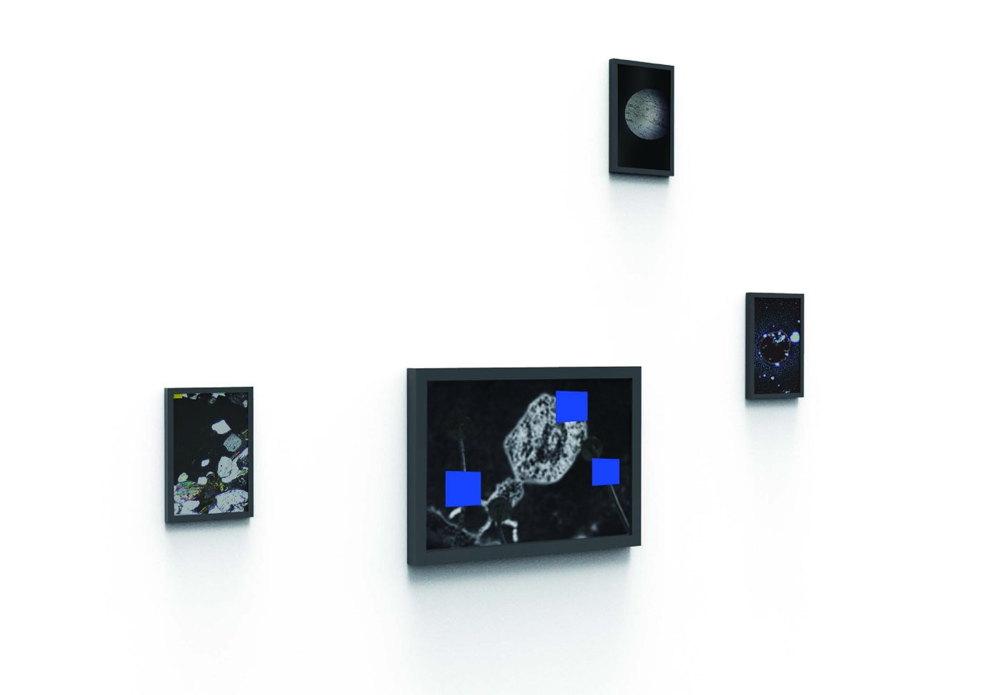
GIST 오룡아트홀 초대전 '더 나은 공존'
GIST 초대전 ‘더 나은 공존’, 청년 작가 13명 47점
기사 원문 보기 ↗㈔한국청년문화예술인협회 주관 ‘블루 아트페스티벌’ 진행
협회 주관 ‘블루 아트페스티벌’ 진행
기사 원문 보기 ↗작가 20명 '기후·환경위기' 경고…나주천연염색재단 17일까지 특별전
작가 20명 ‘기후·환경위기’ 경고 특별전
기사 원문 보기 ↗나주천연염색재단, 기후·환경위기 특별전
나주천연염색재단, 기후·환경위기 특별전
기사 원문 보기 ↗나주천연염색재단, ‘기후·환경위기’ 문제 다룬 특별전시전 열어
‘기후·환경위기’ 문제 다룬 특별전시
기사 원문 보기 ↗나주천연염색재단, ‘기후·환경위기’ 문제 다룬 특별전시전 열어
블루아트 페스티벌 — 협회 주관, 전라남도 후원
기사 원문 보기 ↗청년예술가 시선으로 바라본 기후위기
청년 예술가 시선으로 바라본 기후위기
기사 원문 보기 ↗나주 천연염색재단, 17일까지 기후·환경위기 특별전
기후·환경위기 특별전, 청년 작가 20명
기사 원문 보기 ↗나주 천연염색재단, 17일까지 기후·환경위기 특별전
나주 천연염색재단, 기후·환경위기 특별전
기사 원문 보기 ↗나주천연염색재단, ‘기후·환경위기’ 특별전 열어
‘기후·환경위기’ 특별전 열어
기사 원문 보기 ↗[호남제주/게시판] 한국청년문화예술인협회 기획전 ‘Breath Together’
호남 게시판 — 기획전 ‘Breath Together’
기사 원문 보기 ↗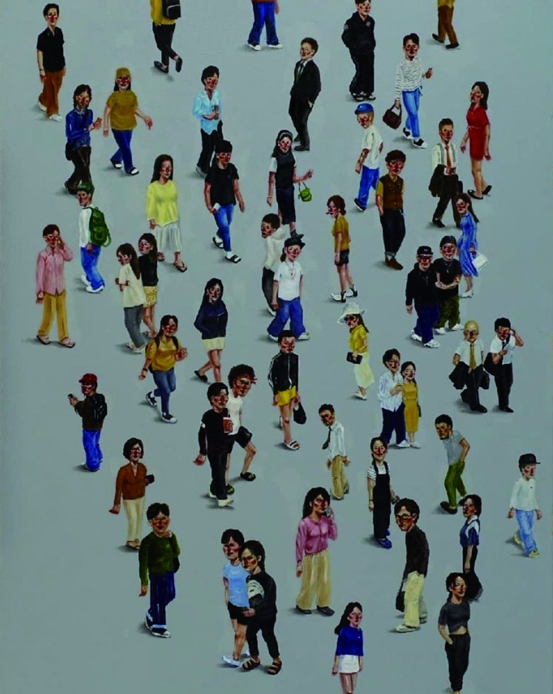
(사)한국청년문화예술인협회 ‘함께 숨쉬기’ 아트페어,16일까지 한전거래소
‘함께 숨쉬기’ 아트페어, 16일까지 한전거래소
기사 원문 보기 ↗청년 예술인 잠재력 아트마켓서 확인하세요
청년 예술인 잠재력, 아트마켓서 확인하세요
기사 원문 보기 ↗KPX 한국전력거래소·한국청년문화예술인협회 ‘아트페어’
KPX 한국전력거래소·협회 ‘아트페어’
기사 원문 보기 ↗11월30일 알림
알림 — 한국전력거래소·협회 ‘함께 숨쉬기’ 아트페어
기사 원문 보기 ↗나주 청년 작가 14명 '함께 숨쉬기 프로젝트' 아트페어
KPX 한국전력거래소와 청년 작가 14명 아트페어
기사 원문 보기 ↗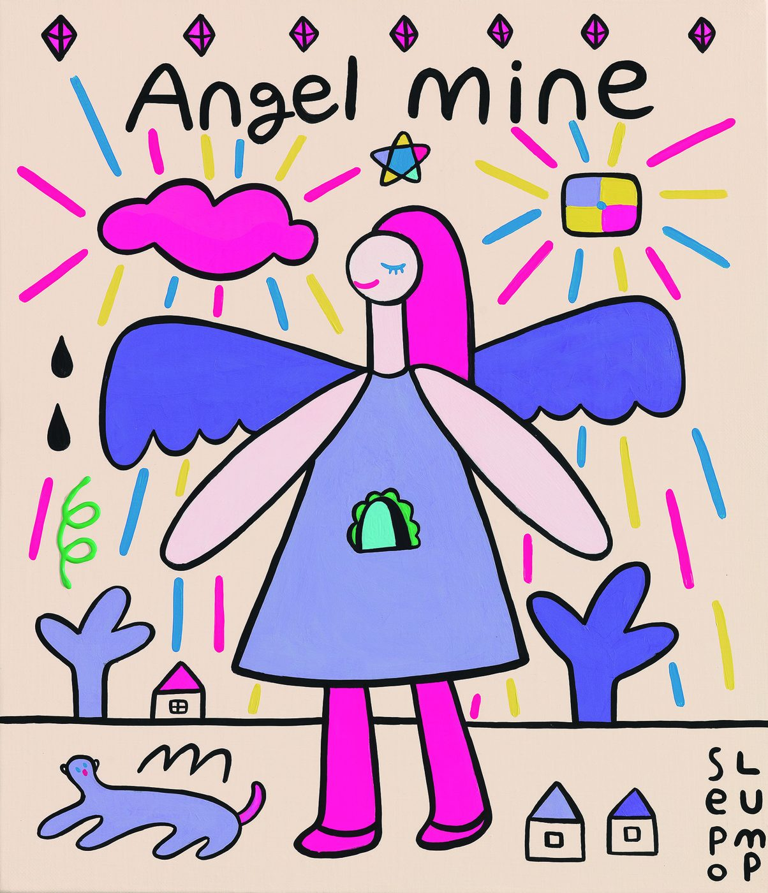
나주 청년 작가 14명 ‘함께 숨쉬기 프로젝트’ 아트페어
나주 청년 작가 14명 ‘함께 숨쉬기 프로젝트’ 아트페어
기사 원문 보기 ↗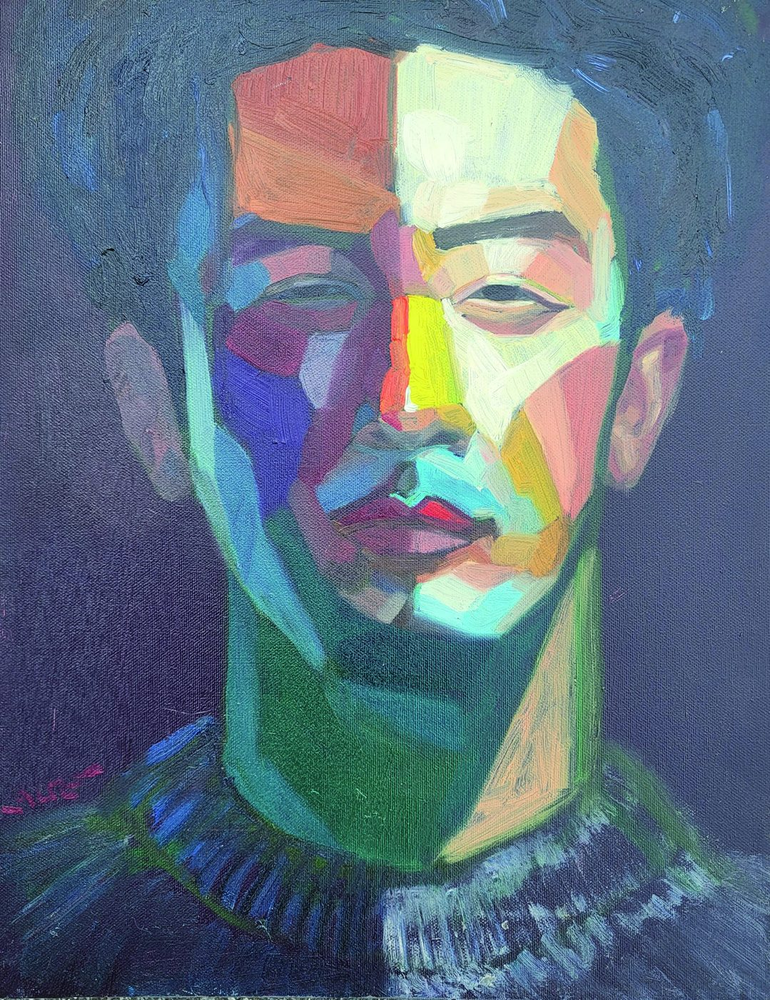
청년 작가들의 당찬 예술행진... ‘함께 숨쉬기 프로젝트’ 아트페어 개최
청년 작가들의 당찬 예술행진 — 177점 전시·판매
기사 원문 보기 ↗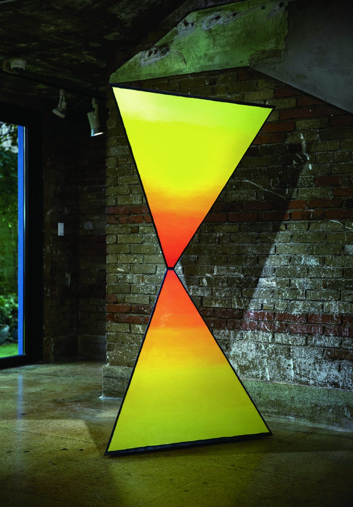
‘함께 숨쉬기 프로젝트’ 아트페어 나주 혁신도시서 개막
‘함께 숨쉬기 프로젝트’ 아트페어 나주 혁신도시서 개막
기사 원문 보기 ↗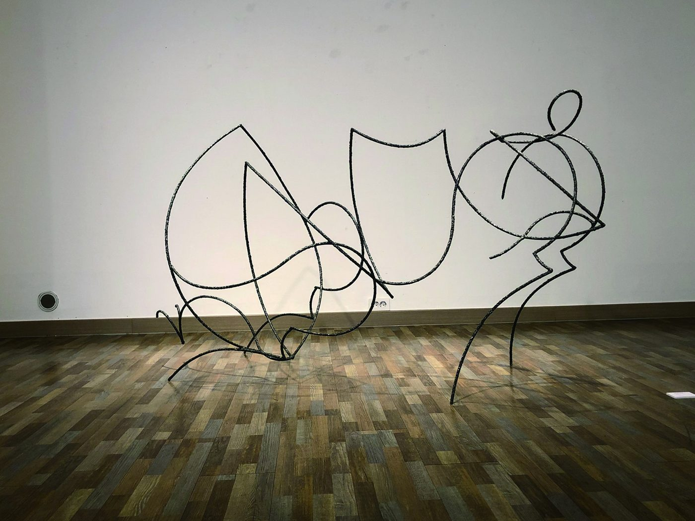
진입장벽 낮춘 ‘함께 숨쉬기 프로젝트 ’ 아트페어
진입장벽 낮춘 아트페어, 청년 작가 판로 개척
기사 원문 보기 ↗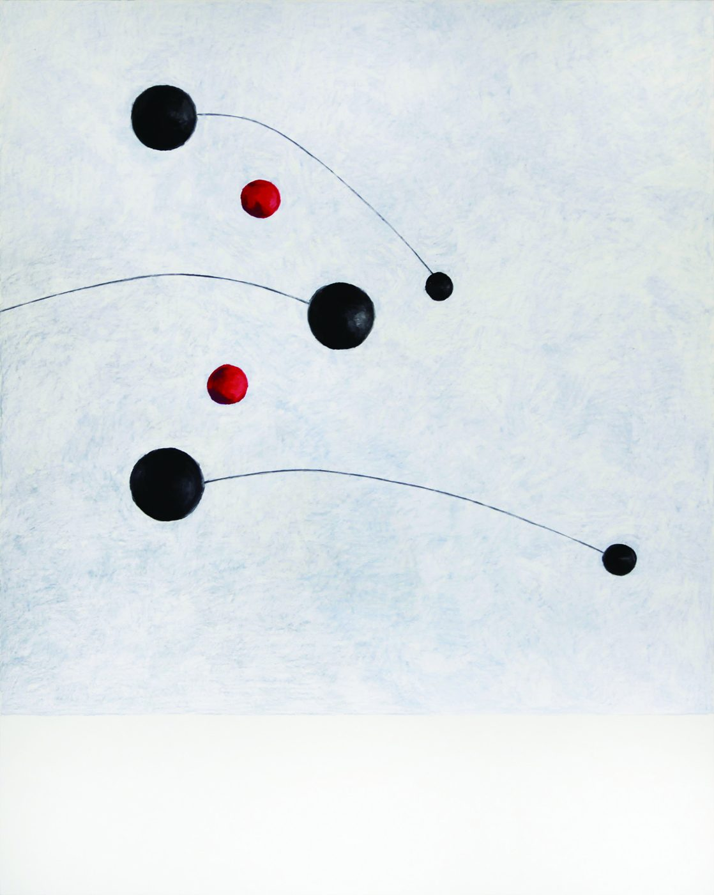
청년 작가들의 당찬 예술행진, ‘함께 숨쉬기 프로젝트’ 아트페어 개최
청년 작가들의 당찬 예술행진 아트페어 개최
기사 원문 보기 ↗한길 예술의 열정 전남대 출신 작가 한자리
한길 예술의 열정, 전남대 출신 작가 한자리
기사 원문 보기 ↗개교 70년…전남대 출신 미술인 한자리
개교 70년 전남대 출신 미술인 ‘ART FESTA’
기사 원문 보기 ↗지친 일상에 꿈꾸는 날개를
개인전 ‘자유낙하’ — 지친 일상에 꿈꾸는 날개를
기사 원문 보기 ↗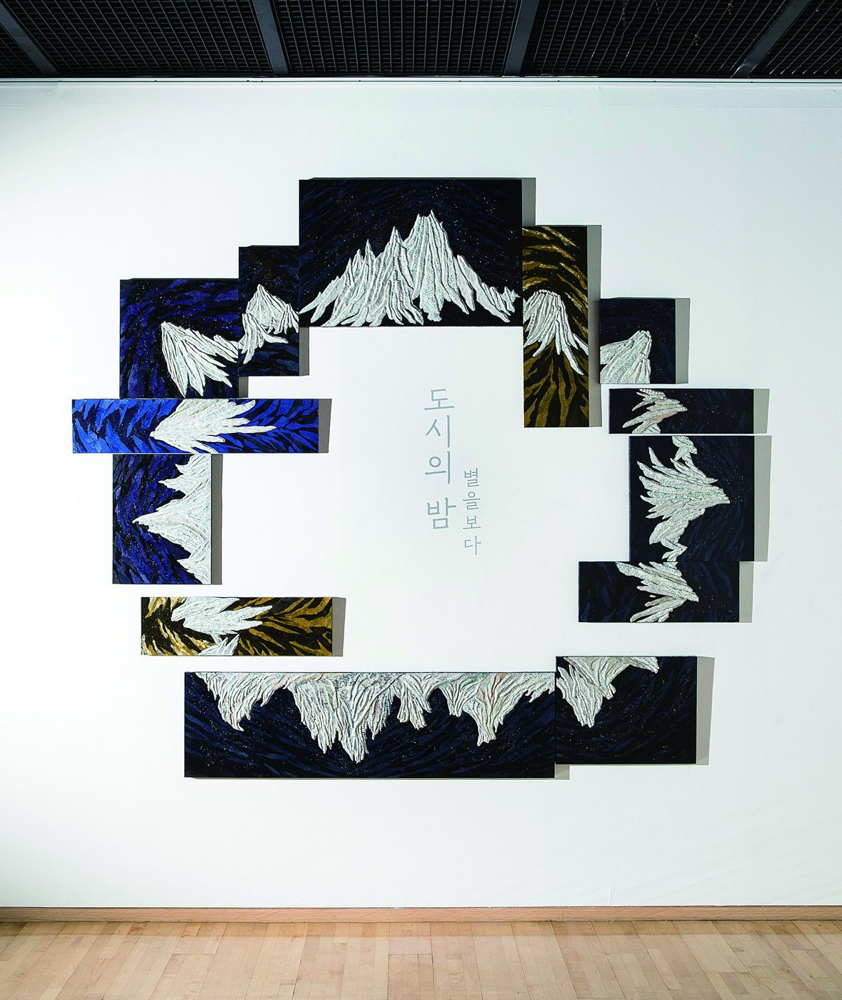
광주 광산구, 별밤 미술관 전시 운영
광산구 별밤미술관 순회전 ‘도시의 밤 — 별을 보다’
기사 원문 보기 ↗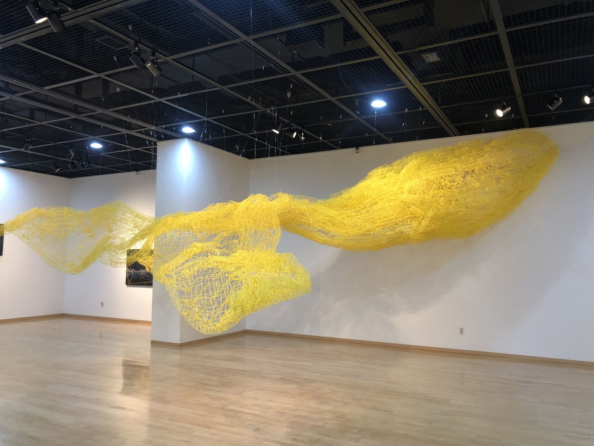
전남대박물관, '일상 탐색전' 전시
전남대박물관 ‘일상 탐색전’ 초대작가
기사 원문 보기 ↗전남대박물관, ‘일상 탐색전’
‘일상 탐색전’ — 희망을 고래로 형상화
기사 원문 보기 ↗전남대박물관 '일상 탐색전' 전시
전남대박물관 초대기획전 ‘일상 탐색전’
기사 원문 보기 ↗(사)한국청년문화예술인협회 전·신임 회장 이·취임
김세진 신임 회장 “청년의 열정으로 문화예술에 새 활력”
기사 원문 보기 ↗2030 청년 예술인들의 ‘열정’ 대중 앞에 서다
2030 청년 예술인들의 열정, 43점으로 대중 앞에
기사 원문 보기 ↗청년 예술가들, 손잡고 대중 만남 기회 만든다
청년 예술가 14명, ‘지금, 우리’展으로 대중과 만나다
기사 원문 보기 ↗나주서 15일 코로나블루 치유 '지금, 우리' 기획전
코로나블루 치유 기획전 ‘지금, 우리’ 개최 예고
기사 원문 보기 ↗한국청년문화예술인협회 ‘지금, 우리’展 15-30일 나주나빌레라문화센터
신임 회장 선출과 함께 ‘지금, 우리’ 기획전
기사 원문 보기 ↗(사)한국청년문화예술인협회, ‘지금, 우리’ 기획전 및 이·취임식 개최
‘지금, 우리’ 기획전 및 협회장 이·취임식
기사 원문 보기 ↗한국청년문화예술인협회, ‘협회장 이·취임식 개최’
협회장 이·취임식 — 김세진 회장 취임
기사 원문 보기 ↗낯선 기준, 작가적 시선으로 풀어낸다
낯선 기준, 작가적 시선으로 풀어낸다
기사 원문 보기 ↗전남대 미술학과 동문들 제주서 ‘뉴노멀과 미술가들’展
제주아트센터 ‘뉴노멀과 미술가들’展 — ‘도시의 밤’
기사 원문 보기 ↗전남대 미술학과 동문들 작품 한자리에
전남대 미술학과 석·박사 ‘일팔일구’전 (서울 인사동)
기사 원문 보기 ↗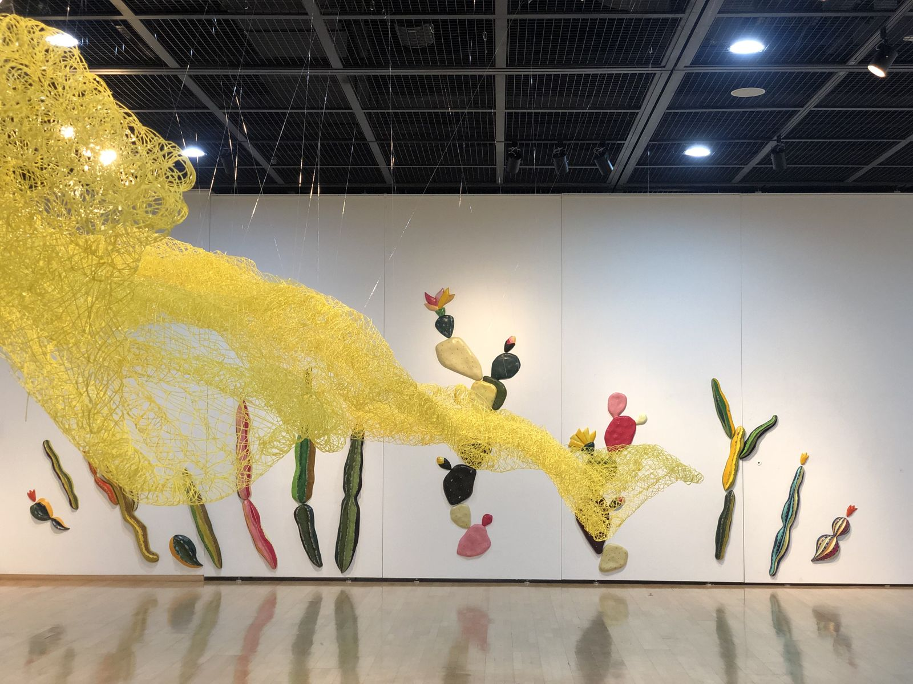
5월 광주…조각가 김세진 2∼8일 개인전
조각가 김세진 개인전 ‘꿈꾸며 빛나는 것들’
기사 원문 보기 ↗김세진 조각가의 ‘꿈꾸며 빛나는 것들’展
김세진 조각가의 ‘꿈꾸며 빛나는 것들’展
기사 원문 보기 ↗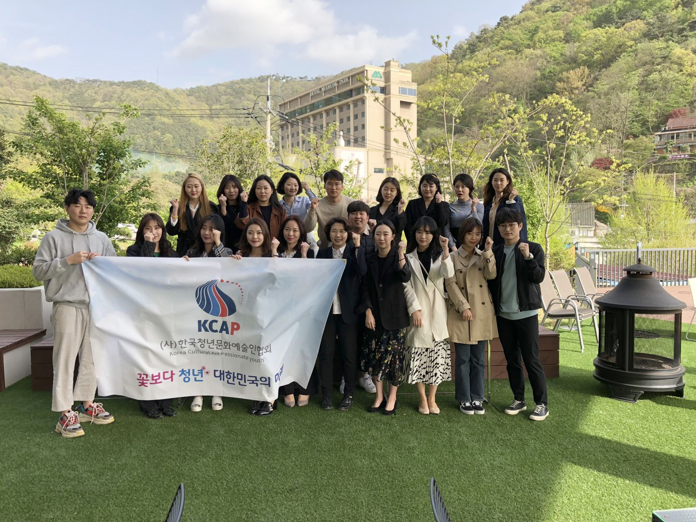
[파워인터뷰] 김보미 청년문화예술인협회장
파워인터뷰 — 청년문화예술인협회의 출범과 활동 계획
기사 원문 보기 ↗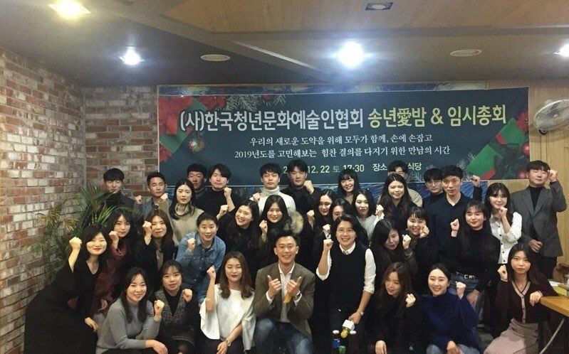
(사)한국청년문화예술인회 송년愛밤 기념식
청년 60여 명 등 100여 명이 참석한 송년愛밤 기념식
기사 원문 보기 ↗“청년의 힘으로 세상을 바꾸자”
“청년의 힘으로 세상을 바꾸자” 임시총회·송년愛밤 성료
기사 원문 보기 ↗(사)한국청년문화예술인회 '송년愛밤&임시총회' 개최
창립 첫해 임시총회·송년愛밤 기념식 개최
기사 원문 보기 ↗주말문화가 — 김세진 조각전
주말문화가 — 김세진 조각전 (갤러리바 0518)
기사 원문 보기 ↗25일 광주시립미술관 '빨래를…'
‘널기 좋은 날’을 주제로 한 시민 체험 ‘빨래를 널어드립니다’
기사 원문 보기 ↗상록전시관에서 ‘작가와 톡, 작품과 톡’ 하기
광주시립미술관 ‘의기, 양양’展 — 작가와의 대화
기사 원문 보기 ↗기사 저작권은 각 언론사에 있습니다. 카드 이미지는 해당 전시·행사의 협회 자료 사진입니다.